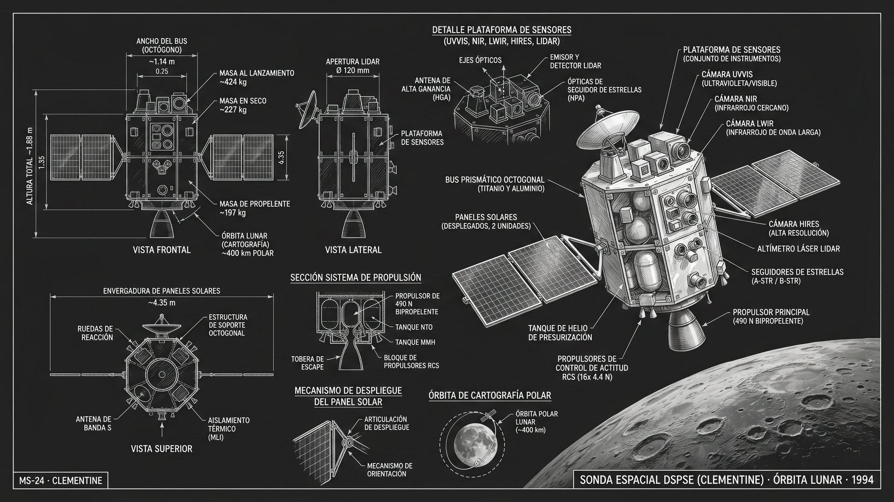

Clementine

Hizo el primer mapa de alturas de toda la Luna y buscó hielo en sus polos. Un fallo de software de once minutos la dejó sin combustible y la mandó a dar vueltas al Sol.
Un fallo informático el 7 de mayo de 1994 disparó un propulsor durante 11 minutos y agotó el combustible; el 20 de julio de 1994 la gravedad lunar la envió a una órbita heliocéntrica. Personas: Paul D. Spudis, Richard Truly
Lo que hizo
- Mi encargo — La NASA y el Departamento de Defensa de Estados Unidos se juntaron para una misión doble: probar tecnología militar en el espacio y, de paso, cartografiar la Luna entera.
- El mapa que faltaba — Antes de mí, los datos de altura de la Luna solo cubrían la franja del ecuador. Mi altímetro láser midió el relieve de todo el globo, polos incluidos.
- Once minutos — Un error de software encendió un propulsor durante once minutos. Gasté el combustible en una maniobra que no tocaba y perdí el asteroide y la misión.
Modelo 3D, chat y cómic, en tres idiomas
Fuentes
- nssdc.gsfc.nasa.gov/planetary/clementine.html
- www.nasa.gov/history/30-years-ago-clementine-changes-our-view-of-the-moon/
- www.lpi.usra.edu/lunar/missions/clementine/overview
Ver el índice completo · Proyecto del NASA Space Apps Challenge 2026. Contenido con fuentes citadas.